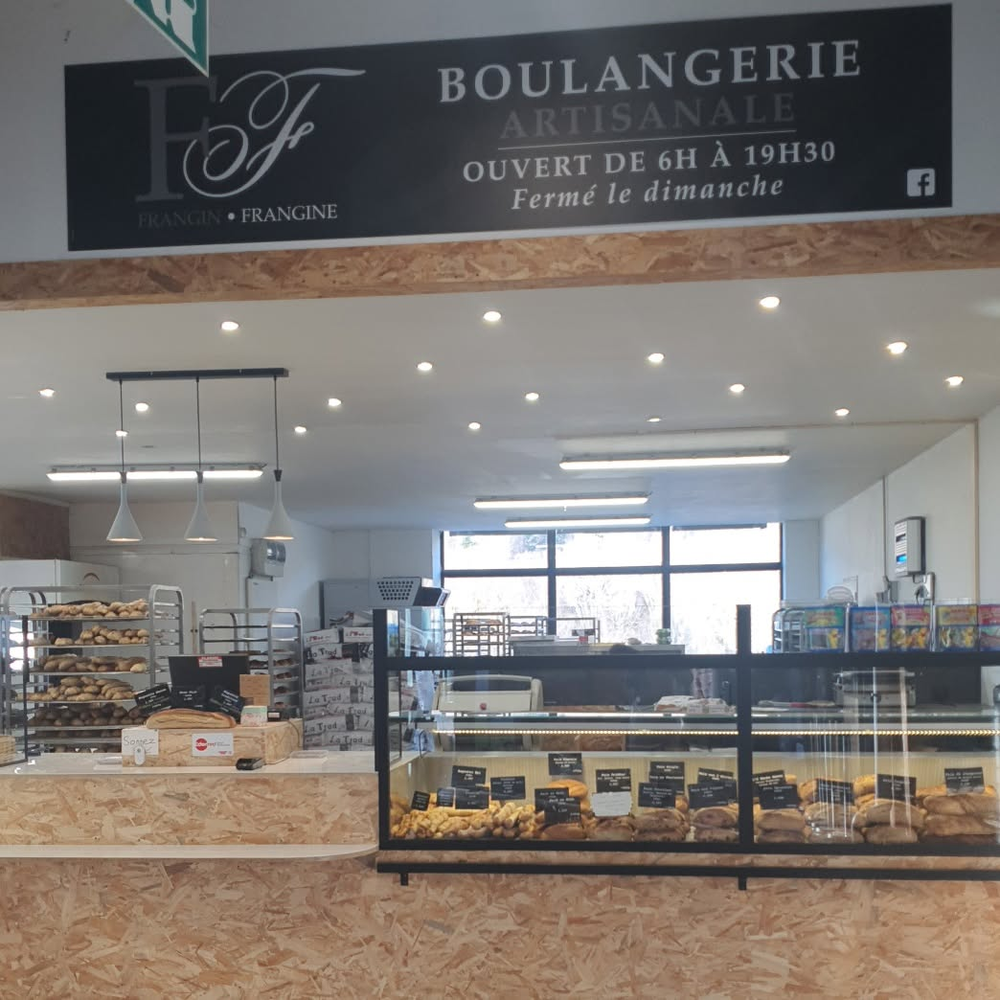
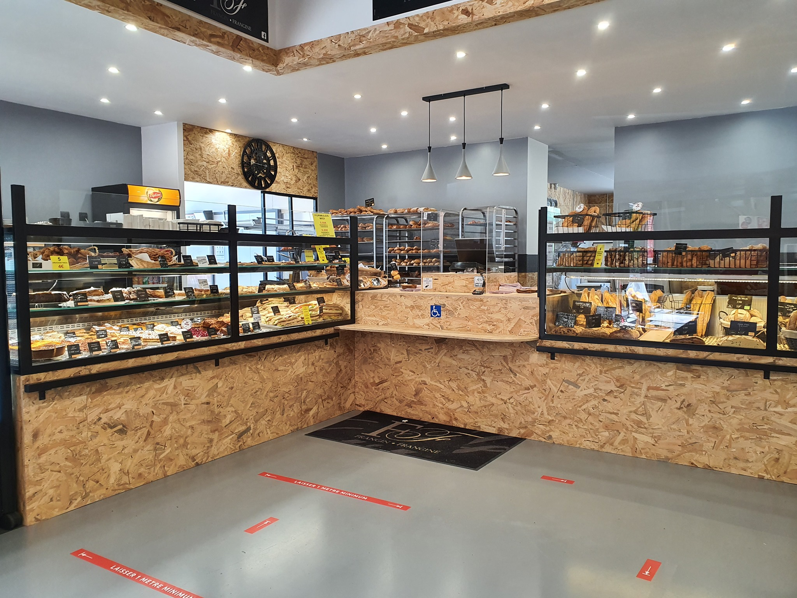
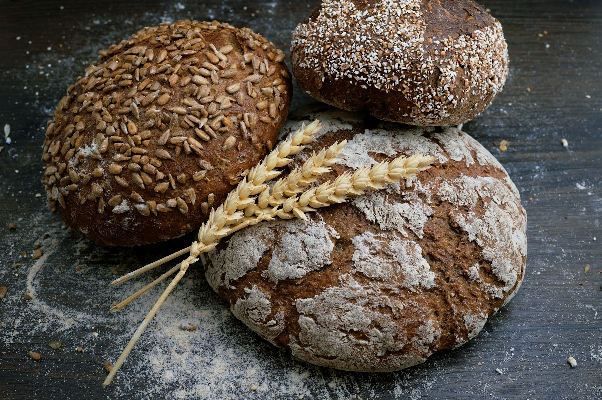
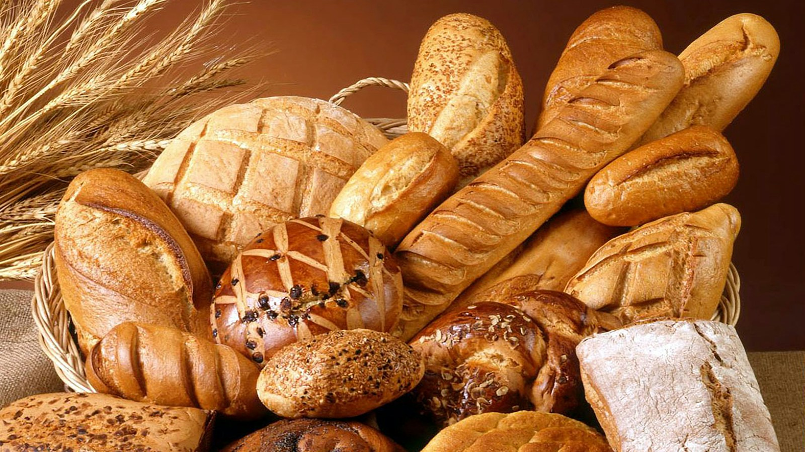
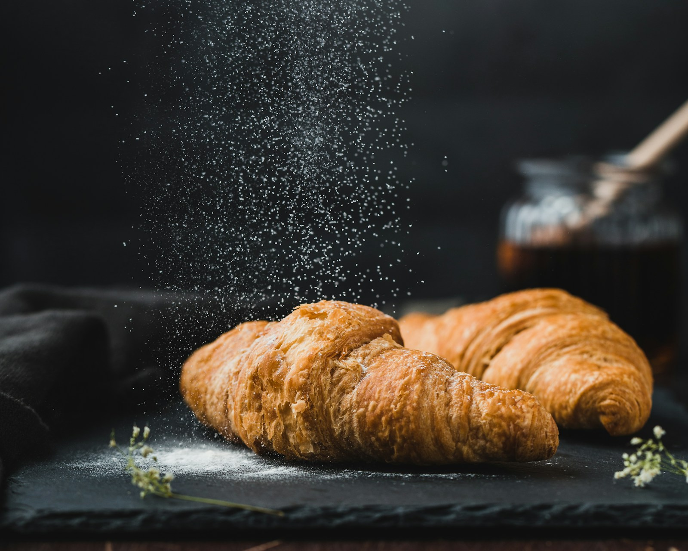
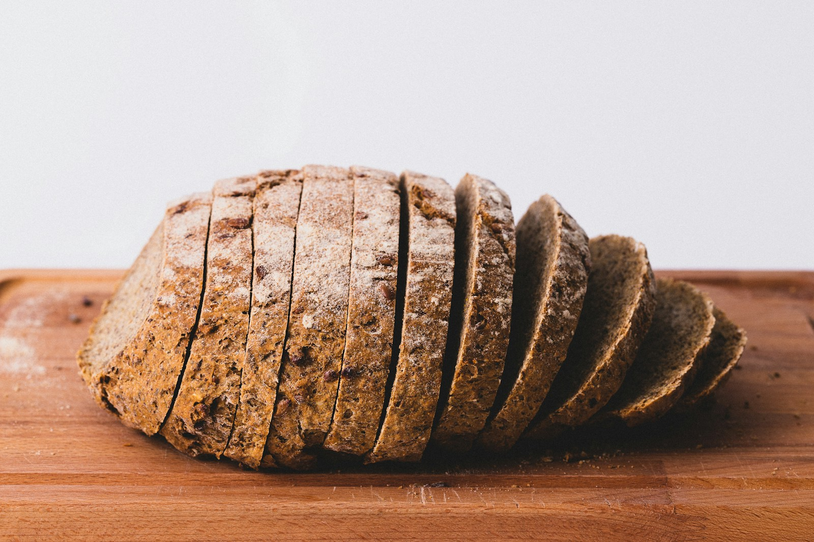

Donner corps
La base de chaque fournée, avant que le jour ne commence.
Saint-Bonnet-en-Champsaur · Depuis 6 h
Du pain au quotidien, des vitrines bien garnies et une maison locale ouverte du premier café au retour du travail.

La maison
Un fournil
bien ancré.
Frangin Frangine accueille Saint-Bonnet-en-Champsaur dans une boutique claire où le bois brut rencontre les lignes noires des vitrines.
Une adresse de proximité pour le pain, les viennoiseries, les pâtisseries et les pauses salées de la journée.

Une esthétique simple : matières brutes, gestes précis.

Savoir-faire
La base de chaque fournée, avant que le jour ne commence.
Des gestes répétés pour obtenir une forme régulière et une belle cuisson.
Le moment où la croûte prend sa couleur et où la boutique se parfume.
Au comptoir

La sélection varie avec la production et les fournées du jour.

Pour accompagner le premier café ou repartir avec le petit-déjeuner.

Sandwichs et propositions salées disponibles selon le comptoir.
Les produits exacts évoluent selon la production. Pour une commande ou une demande particulière, appelez directement la boutique.
“Le pain comme
un repère quotidien.
Venir
Centre commercial Carrefour Market
05500 Saint-Bonnet-en-Champsaur
Lundi — Samedi6 h — 19 h 30
DimancheFermé
Le fournil du quotidien.
Commander ↗